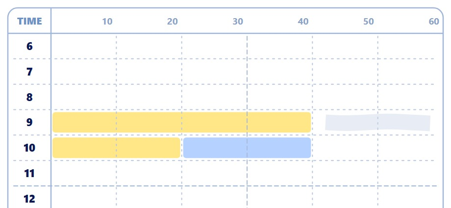

스터디 플래너 인터랙션 속지 — 가로형 · 세로형 시안
작성일: 2026-10-27 · 담당: 황민희 · 상태: 시안 + 앱 테스트판 (편집기 '페이지 추가 → 스터디 플래너')
PDF 한 파일: 스터디 플래너 속지.pdf (A4 가로) · 눌러 보는 시안: 시안.html. md가 원본이며python "docs/스터디 플래너 속지/빌드.py"로 PDF를 다시 만든다.
형광펜으로 쓸면 10분 칸이 반듯하게 칠해지고, 펜으로 체크하면 그 펜 색 ✓가 남는 속지. 과목을 고르는 단계 없이 지금 든 형광펜 색이 곧 분류이고, 총 공부 시간 · 색별 시간 · 시작/끝 시각은 앱이 센다.


문서
| 문서 | 내용 |
|---|---|
| 01 레퍼런스 조사 | 구글 · 네이버 "스터디 플래너 다꾸 · 10분 플래너 형광펜" 검색 스크린샷 10장, 공통 구성 요소, 가져온 것 |
| 02 인터랙션 기능 | 기능 우선순위, 10분 칸 채움 규칙, 펜 색 체크 · 할 일 줄 띠, 자동 칸, 도구별 반응표, 저장 · 출력 |
| 03 디자인 | 가로 · 세로 배치와 영역 좌표, 선 규칙(바깥 실선 · 안쪽 점선), 색 · 글자, 종이 색 |
한눈에 보기
| 질문 | 답 |
|---|---|
| 무엇을 칠하나 | 시간표의 10분 칸. 형광펜 획이 지나간 칸 전체가 그 색으로 채워진다 |
| 과목은 | 고르지 않는다. 색이 분류. 할 일 줄 오른쪽 색 칸을 같은 색으로 채워 짝짓는다 |
| 체크 색은 | 체크할 때 들고 있던 펜 색 |
| 안쪽 칸 선은 | 점선. 바깥 테두리 · 머리줄 · 시간 숫자 열만 실선 |
| 자동 계산 | 총 공부 시간(칸 수 × 10분), 시작 ~ 끝 시각, 색깔별 공부 시간 막대 · 비율(정수, 합 100) |
| 새 도구가 필요한가 | 아니다. 기존 펜 · 형광펜 · 지우개 · 손. 속지 영역이 획을 알아듣는다 |
| 가로 · 세로 차이 | 가로는 3단(할 일 · 시간표 · 기록), 세로는 10분 플래너 기본형(할 일 + 긴 시간표 띠) |
정한 것
| 항목 | 결정 | 이유 |
|---|---|---|
| 쉬는 시간 | 속지 옵션에서 쉬는 시간 색을 고르면 그 색 칸은 합계에서 뺀다. 총 공부 시간 칸에 쉬는 시간 1시간 10분처럼 따로 보이고, 색별 기록 맨 아래에 흐리게 둔다 |
사용자 요청. 쉬는 시간도 칠해 하루 흐름을 남기고 싶은 사람이 많다 |
| 색별 기록 순서 | 처음 칠한 순서로 고정 | 칠하는 중에 줄이 뒤바뀌지 않는다 |
| 계획 줄 | 1차에서 뺀다 | 한 시간 줄을 계획 · 실제로 나누면 칸 높이가 반이 되어 손가락으로 칠하기 어렵다. 계획은 할 일 칸에 쓴다 |
| 주간 쪽 | 후속안 | 하루 쪽이 실제로 쓰이는지 먼저 본다. 기록이 칸 데이터라 나중에 모으기 쉽다 |
| 시간표 시작 | 속지 옵션에서 5 · 6 · 7시 중 고른다(기본 6시). 바꿔도 칠한 칸은 같은 시각에 남는다 | 24줄이 하루 전체라 시작만 바꾸면 되고 잃는 칸이 없다 |
| 형광펜 칸 맞춤 | 속지 옵션에서 켬 · 끔 (기본 켬) | 시간표 위에 자유롭게 꾸미고 싶을 때 끈다 |
앱 테스트판


-
가로 · 세로 그림은 앱 코드(
studyPlannerSvg)가 만든 속지를 그대로 찍었다. 초록이 쉬는 시간 색이라 합계 · 비율에서 빠지고쉼으로 표시된다. 속지 옵션 화면은 양식을 바꾸기 전 웹 빌드에서 찍었다. -
여는 법 — 편집기 → 페이지 목록 → 페이지 추가 → 스터디 플래너(데일리 플래너 옆). 다이어리 방향에 맞춰 가로 1024 × 768 · 세로 768 × 1024 속지가 들어간다.
- 써 보기 — 형광펜으로 시간표 · 할 일 줄(→ 오른쪽 색 칸) 쓸기, 펜으로 체크칸 · 요일 · 하트 톡, 지우개로 칸 지우기(획 지우개는 막대 통째, 영역 지우개는 한 칸). 되돌리기 한 번에 한 획.
- 속지 옵션 — 선택 도구에서 빈 곳을 길게 누름 → 속지 옵션. 종이 색 아래에 쉬는 시간 색 · 시간표 시작 · 형광펜 칸 맞춤이 있다(이 페이지에만 적용).
- 이번 판에서 안 되는 것 — 쓰는 동안 칠해질 칸을 점선으로 미리 보여 주기(지금은 펜을 떼면 바로 칠해짐), 다이어리 만들 때 내지 구성에서 고르기.
- 코드 —
frontend/src/editor/templates/studyPlanner.js(속지 바탕 · 기록 덮개 SVG · 획 → 칸 판정 · 합계 · 비율),studyPlannerGlyphs.js(MaruBuri 글자 윤곽, 자동 생성), 연결:PenInput·EraserInput·Canvas·PageBackground·PaperColorSettings·pageExport·editorReducer(setPlanner). 테스트:frontend/tests/study-planner.test.js. - 시안 HTML(시안.html)은 1280 × 800 기준이고 색별 기록이 많은 순이다. 앱은 위 결정대로 처음 칠한 순.
폴더
스터디 플래너 속지/
├── 스터디 플래너 속지.pdf · .html ← 결과물 (빌드.py)
├── 시안.html 눌러 보는 시안 (가로 · 세로)
├── 색인.md · 01~03 md ← 원본
├── 빌드.py md → html → pdf (크롬 헤드리스)
├── 스크린샷/ 검색 스크린샷 10장 (2026-10-27)
├── 목업/ 속지 전체 · 영역 지도 · 인터랙션 단계 (렌더.py)
└── 스크립트/ 스크린샷찍기.py · 렌더.py
01 레퍼런스 조사 — 스터디 플래너 다꾸
2026-10-27에 구글 · 네이버에서 "스터디 플래너 다꾸", "10분 플래너 형광펜", "굿노트 스터디 플래너 속지", "공부 타임테이블 색칠", "가로형 · 세로형 스터디 플래너" 같은 검색어로 찾은 결과를 모았다. 구글 이미지 검색은 한국어 검색어에서 봇 확인(reCAPTCHA)에 걸려 영어 검색 1장과 구글 통합 검색 1장만 쓰고, 나머지는 네이버 이미지 · 블로그로 채웠다.
검색 화면


- 10분 플래너 형광펜 — 거의 모든 사진이 같은 모양이다. 한 시간이 한 줄, 한 줄이 10분 칸 6개이고, 공부한 시간을 형광펜으로 가로로 길게 칠한다. 색은 3~6가지를 섞고, 칠한 막대가 줄마다 이어져 "색 막대 그래프"처럼 보이는 게 다꾸 사진의 핵심이다.
- 스터디 플래너 다꾸 — 칠한 시간표 옆에 할 일 목록 · 체크 · 스티커 · 마스킹테이프를 얹는다. 할 일 줄도 형광펜으로 칠해 시간표 색과 맞추는 사진이 많다(과목 이름 칸 대신 색으로 묶는다).


- 공부 타임테이블 색칠 — 종이 제품(오늘공부 · 텐바이텐 등)의 시간표는 바깥 테두리와 시간 숫자만 진하고, 안쪽 10분 칸 선은 가늘거나 점선이다. 칠했을 때 선이 색을 가르지 않게 하려는 처리다.
- 굿노트 스터디 플래너 속지 — 디지털 속지도 구성은 종이와 같다: 날짜 · D-day · 총 공부 시간 · 할 일 · 10분 시간표 · 메모. 어두운 속지에 형광 색 막대를 칠한 사진, 분홍 톤 다꾸 속지도 보인다. 칠하기는 전부 사용자가 손으로 하고, 칸에 맞춰 주는 기능은 없다.


- 가로형 — 태블릿 가로 화면용. 2~3단으로 나눠 왼쪽 할 일, 가운데 시간표, 오른쪽 메모 · 기록을 둔다. 2쪽 펼침(왼쪽 계획 · 오른쪽 기록)도 많다.
- 세로형 — 가장 흔한 10분 플래너 모양. 위에 날짜 · D-day · 목표, 아래 왼쪽은 넓은 할 일 칸, 오른쪽은 위아래로 긴 시간표 띠.


- study planner aesthetic — 해외 속지는 파스텔 바탕 · 둥근 상자 · 영문 소제목(TIME TABLE, TO DO, NOTES)이 공통이다. 시작/끝 시각, 총 공부 시간 칸이 따로 있다.
- 구글 10분 타임테이블 — AI 요약도 "과목별로 색을 정해 형광펜으로 10분 칸을 채우면 하루 공부 패턴이 한눈에 들어온다"고 정리한다. 하루가 끝난 뒤 실제 보낸 시간을 돌아보는 용도가 핵심.
- 공스타그램 — 인증 사진은 상단의 큰 총 공부 시간 숫자(예: 8H 50M)와 칠한 시간표가 함께 보이게 찍는다.

- 쓰는 법 블로그 — 보통 순서: 아침에 할 일을 적고 → 공부할 때마다 시간표를 칠하고 → 끝난 할 일은 체크(✓) · 미룬 건 화살표나 △ → 밤에 총 시간을 세서 적고 → 한 줄 회고. 총 시간을 칸 수로 직접 세는 게 귀찮다는 이야기가 반복된다.
공통 구성 요소
| 요소 | 자주 보이는 정도 | 이번 시안 |
|---|---|---|
| 10분 시간표 (1시간 = 6칸, 06시 시작 24줄) | 거의 전부 | 넣음 · 형광펜 칸 맞춤 |
| 날짜 · 요일 동그라미 | 거의 전부 | 넣음 · 요일은 펜 색 표시 |
| D-day | 많음 | 넣음 |
| 총 공부 시간 (H · M) | 많음 · 손으로 셈 | 자동 계산 |
| 할 일 + 체크칸 | 거의 전부 | 넣음 · 펜 색 체크 · 줄 형광펜 |
| 과목 이름 칸 / 과목별 시간 | 많음 | 과목 칸 대신 색별 자동 합계 + 이름은 손글씨 |
| 오늘의 목표 · 한마디 | 많음 | 넣음 |
| 메모 · 회고 · 피드백 | 많음 | 넣음 |
| 만족도 · 집중도 | 가끔 | 넣음(하트 5개) |
| 시작 · 끝 시각 | 가끔 | 자동 표시 |
| 계획/실제 두 줄 시간표 | 가끔 | 후속안(02 · 정할 것) |
| 주간 누적 막대 | 가끔(별도 쪽) | 후속안 |
이번 시안에 가져온 것
- 칠하는 재미는 그대로, 세는 일은 자동으로. 사람들이 형광펜으로 칠하는 행위 자체를 즐기므로 칠하기를 버튼으로 바꾸지 않는다. 대신 칸에 딱 맞게 정리하고, 총 시간 · 색별 시간 · 시작/끝 시각은 앱이 센다.
- 과목 대신 색. 과목 이름을 고르는 과정을 없애고, 지금 들고 있는 형광펜 색이 곧 분류다. 색 옆에 이름이 필요하면 손글씨로 적는다.
- 체크는 펜 색으로. 다꾸 사진에서 체크 색을 바꿔 쓰는 경우가 많다(완료는 검정, 중요한 건 빨강 등). 체크 모양만 반듯하게 다듬고 색은 지금 펜 색을 쓴다.
- 안쪽 칸은 점선. 바깥 테두리 · 시간 숫자 · 머리줄은 실선, 칠하는 안쪽 칸은 점선으로 해서 칠한 막대가 선에 잘리지 않게 한다.
02 인터랙션 기능
새 도구를 만들지 않는다. 기존 펜 · 형광펜 · 지우개 · 손 도구를 그대로 쓰고, 속지 영역이 그 획을 알아듣는다. 같은 형광펜이라도 시간표 안에서 시작하면 칸 채움, 바깥에서 시작하면 보통 형광펜 획이다.
기능 목록
| 우선 | 기능 | 도구 · 동작 | 결과 |
|---|---|---|---|
| 필수 | 10분 칸 채움 | 형광펜으로 시간표를 쓸기 | 펜촉 중심이 지나간 칸이 그 형광펜 색으로 통째 칠해짐 |
| 필수 | 총 공부 시간 자동 | — | 칠한 칸 수 × 10분, 총 공부 시간 칸에 8시간 50분 |
| 필수 | 펜 색 체크 | 펜으로 체크칸을 톡 또는 ✓ 모양으로 긋기 | 반듯한 ✓가 지금 펜 색으로 그려짐 |
| 필수 | 색깔별 공부 시간 자동 | — | 색 칩 · 막대 · 시간 · 비율(%), 처음 칠한 순 |
| 필수 | 지우기 · 되돌리기 | 지우개로 칸 · 체크 · 색 칸을 지나가기 / 실행 취소 | 획 지우개는 닿은 막대 통째로, 영역 지우개는 칸 하나씩. 한 번 쓸기 = 한 번 취소 |
| 권장 | 할 일 색 칸 | 형광펜으로 할 일 줄을 쓸기 | 그 줄 오른쪽 색 칸이 형광펜 색으로 참 |
| 권장 | 색 바꾸기 | 다른 색 형광펜으로 이미 칠한 칸을 다시 쓸기 | 그 칸만 새 색으로 바뀜(진해지지 않음, 시간 그대로) |
| 권장 | 시작 · 끝 시각 | — | 총 공부 시간 칸 오른쪽 위에 첫 칸 ~ 마지막 칸 시각 |
| 권장 | 요일 표시 | 펜으로 요일을 톡 / 형광펜으로 톡 | 펜은 동그라미, 형광펜은 동그란 칠. 하나만 선택 |
| 권장 | 만족도 | 펜으로 하트 n번째를 톡 | 1~n번째 하트가 지금 펜 색으로 채워짐 |
| 자유 | 손글씨 · 꾸미기 | 펜 · 형광펜 · 스티커 · 테이프 | 칸 맞춤 없이 그대로. 날짜 · D-day · 목표 · 할 일 글자 · 메모 · 회고 |
1. 10분 칸 채움


- ① 쓰는 중 — 형광펜 획은 원래대로 반투명하게 보이고, 그 밑에 "칠해질 칸"이 같은 색 점선 테두리로 미리 보인다. 줄 끝에서 펜을 들지 않고 다음 줄로 내려가도 한 동작으로 이어진다.
- ② 펜을 떼면 — 손으로 그은 획은 사라지고, 미리보기 칸이 반듯하게 칠해진다. 같은 줄의 같은 색 칸은 하나의 둥근 막대로 이어 그려 종이에 형광펜으로 칠한 느낌을 낸다. 총 공부 시간 · 색깔별 공부 시간이 바로 바뀐다.
규칙
- 시간표 안에서 시작한 형광펜 획만 칸 채움이 된다. 바깥에서 시작해 들어온 획은 보통 형광펜 획으로 남는다(꾸미기용 밑줄을 망치지 않게).
- 칸 판정은 펜촉 중심선으로 한다. 굵은 형광펜 가장자리만 스친 옆 줄 · 옆 칸은 칠하지 않는다. 빠르게 그어도 칸이 빠지지 않게 점 사이를 3pt 간격으로 채워 판정한다.
- 한 번 쓸기(펜 대고 ~ 뗄 때까지)가 실행 취소 한 단위다.
- 같은 색으로 다시 쓸면 변화 없음. 다른 색이면 그 칸만 색이 바뀌고 시간은 늘지 않는다.
- 시간표 바깥으로 나가면 채움만 멈추고 다시 들어오면 이어진다. 두 번째 손가락 · 손바닥이 닿거나 취소 이벤트가 오면 미리보기를 버린다.
- 칸 채움은 그림이 아니라 기록으로 저장한다(
{줄, 칸, 색}목록). 그래서 레이어 패널에 획으로 쌓이지 않고, 합계 계산 · 색 바꾸기 · 지우기가 칸 단위로 된다. - 펜으로 시간표에 쓰는 건 자유 필기다(예: 칸 위에 "인강"이라고 적기). 칸 채움으로 바꾸지 않는다.



- 색 바꾸기 — 다른 색으로 쓸면 지나간 칸만 새 색이 된다. 막대는 색이 바뀌는 지점에서 자동으로 나뉜다.
- 지우개 — 지우개 설정을 따른다. 획 지우개는 닿은 칸이 속한 막대(같은 줄에 이어 칠한 같은 색 칸) 전체를 지우고, 영역 지우개는 지우개 중심이 지나간 칸 하나하나만 지운다. 지우개 크기와는 관계없다. 지우는 동안 칸이 바로 비고, 손을 떼면 한 번의 되돌리기로 확정된다.
- 끝 모양 — 형광펜 끝 모양이 둥글면 막대 양 끝이 반원, 네모면 네모로 칠한다(칸마다 기억). 영역 지우개로 가운데를 지워 막대가 나뉘어도 조각마다 원래 끝 모양을 유지한다. 끝 모양이 다른 칸은 같은 색이어도 다른 막대다.
시간의 뜻
칠한 칸 1개 = 10분 손으로 남긴 기록이다. 타이머로 잰 시간이 아니다. 합계는 칠한 칸 수 × 10분이고, 속지 옵션에서 고른 쉬는 시간 색은 합계에서 뺀다. 쉬는 시간은 총 공부 시간 칸 오른쪽 아래에 쉬는 시간 1시간 10분처럼 따로 보이고, 시간표 막대와 색별 기록에서 흐리게 그린다.
2. 체크 · 할 일 줄


- 펜 색 체크 — 체크칸 안에서 시작한 펜 획이면 모양과 관계없이(톡, ✓, ✕, 낙서) 체크로 본다. 펜을 떼면 손 획 대신 반듯한 ✓를 지금 펜 색 · 굵기 2.8로 그린다. 다시 톡 하면 그 색으로 바뀐다. 지우개로 지우면 빈칸.
- 체크칸에 형광펜으로 톡 하면 칸이 형광펜 색으로 칠해진다(진행 중 표시 등으로 자유롭게).


- 할 일 색 칸 — 할 일 줄 오른쪽 끝에
색칸이 있다. 형광펜으로 그 줄을 쓸면(글자 위든 색 칸이든) 그 줄의 색 칸이 형광펜 색으로 찬다. 시간표에 칠한 색과 같은 색을 골라 할 일과 공부 시간을 짝짓는다. 글자 위를 덮지 않아 손글씨가 그대로 읽힌다. 지우개는 색 칸 위를 지나갈 때만 지운다. - 색 칸과 시간표 색은 연결하지 않는다. 같은 색이면 사람이 보기에 묶일 뿐, 앱이 과목을 추론하지 않는다.
3. 자동으로 채워지는 칸
| 칸 | 계산 | 빈 상태 |
|---|---|---|
| 총 공부 시간 | 쉬는 시간 색을 뺀 칸 수 × 10분 → n시간 mm분, 쉬는 시간은 쉬는 시간 1시간 10분 |
비움 |
| 시작–끝 | 가장 이른 칸의 시작 ~ 가장 늦은 칸의 끝 (09:00 ~ 22:20) |
숨김 |
| 색깔별 공부 시간 | 색별 칸 수 × 10분(1시간 40분 · 50분)과 공부 시간 중 비율(43%), 처음 칠한 순 최대 7색(쉬는 시간 색은 맨 아래, 비율 대신 쉼). 막대 길이는 가장 많은 색 기준 |
빈 칩 · 빈 막대 7줄 |
- 칩 옆 손글씨 이름 칸은 없앴다(칩 바로 옆에 막대). 그래도 줄이 흔들리지 않게 그 페이지에서 처음 칠한 순서로 줄을 고정하고, 새 색만 아래에 붙인다. 쉬는 시간 색은 맨 아래.
- 비율 — 쉬는 시간을 뺀 공부 시간 안에서의 비율이다. 소수점 아래는 표기하지 않고, 버린 소수점이 큰 색부터 1씩 더해 보이는 숫자의 합이 늘 100이 되게 한다(예: 10 · 10 · 10분 → 34 · 33 · 33%).
- 자동 칸은 사용자가 손으로 덮어 쓸 수 없고, 그 위에 자유 필기는 할 수 있다.
4. 도구별 반응 정리
| 영역 | 손 | 펜 | 형광펜 | 지우개 |
|---|---|---|---|---|
| 시간표 칸 | 화면 이동 | 자유 필기 | 칸 채움 | 획 지우개: 막대 통째 · 영역 지우개: 칸 하나 |
| 체크칸 | 화면 이동 | 펜 색 ✓ | 칸 칠 | 체크 지움 |
| 할 일 줄 | 화면 이동 | 자유 필기 | 색 칸 채움 | 색 칸(그 위를 지날 때) · 획 지움 |
| 요일 | 화면 이동 | 동그라미 | 동그란 칠 | 표시 지움 |
| 만족도 하트 | 화면 이동 | 톡 → 1~n개 채움, 여러 개를 그으면 지나간 하트가 그 펜 색으로 참(누적) | 톡 → 1~n개 채움, 여러 개를 그으면 지나간 하트가 한 번에 참(이미 찬 하트에 누적, 하트마다 칠한 색 그대로) | 닿은 하트 하나씩 비움 (획 · 영역 같음) |
| 그 밖 (날짜 · D-day · 목표 · 메모 · 회고) | 화면 이동 | 자유 필기 | 자유 형광펜 | 획 지움 |
- 텍스트 도구 칸 맞춤 — 날짜 · D-day · 오늘의 목표 · 할 일 · 메모 · 오늘 돌아보기를 텍스트 도구로 탭하면, 그 칸(밑줄 폭 · 할 일 줄 · 메모 줄)에 맞춘 글상자가 생긴다. 글자 16 · 줄 높이 28이라 여러 줄도 다음 칸 · 다음 밑줄에 그대로 맞는다. 정렬 · 색은 사용자가 바꾼다. 끌어서 만든 상자는 칸 맞춤 없이 그대로.
- 손바닥 · 펜 입력 분리는 편집기의 기존 규칙(펜이 있으면 손가락은 이동)을 따른다.
- 선택 · 올가미 도구는 속지 기록(칸 · 체크 · 색 칸)을 고르지 않는다. 기록은 속지의 일부라 옮기거나 돌릴 수 없다.
5. 속지 옵션
선택 도구에서 빈 곳을 길게 눌러 여는 속지 옵션(스터디 플래너가 아니면 기존 '속지 색')에 세 가지를 붙였다. 이 페이지에만 쓴다.
| 옵션 | 값 | 동작 |
|---|---|---|
| 쉬는 시간 색 | 없음 · 형광펜 7색 | 고른 색 칸은 합계에서 빼고 흐리게 그린다 |
| 시간표 시작 | 5 · 6 · 7시 (기본 6) | 시간 숫자가 바뀐다. 칠한 칸은 같은 시각으로 옮겨 그대로 남는다 |
| 형광펜 칸 맞춤 | 켬 · 끔 (기본 켬) | 끄면 형광펜 · 펜 모두 보통 획으로 남는다 |
6. 저장 · 출력
- 페이지 속지 ID는
study-planner-landscape·study-planner-portrait, 기록은page.planner에 저장한다:cells: {"줄,칸": 색},checks: {줄: 색},bands: {줄: 색},day,mood,colorOrder,options: {restColor, startHour, snap}. 획 · 스티커 같은 요소는 기존 형식 그대로. - 합계는 저장하지 않고 열 때마다 계산한다(기록과 숫자가 어긋나지 않게).
- 속지 그림은 파일이 아니라 코드로 만든 SVG이고, 기록을 같은 SVG에 그린다. 그래서 편집 화면 · 썸네일 · PNG/PDF 내보내기가 같은 결과를 쓴다(속지 → 기록 → 사용자 요소 순).
- 가로 · 세로 속지는 좌표가 다르므로 서로 바꿔도 기록을 옮기지 않는다. 바꾸기 전에 "기록이 이 방향 속지에만 남아요" 안내.
03 디자인 — 가로형 · 세로형
앱 적용판 — 다른 속지와 같은 양식
앱에 들어간 속지는 아래 시안의 칸 구성을 그대로 두고, 테두리 · 글자 · 제목을 데일리 플래너 등 다른 속지와 맞췄다. 아래 '가로형' 이후 절은 처음 시안(둥근 상자 · 하늘색 선) 기록이다.
- 제목 · 머리줄 — 왼쪽 위
스터디 플래너(MaruBuri Bold 30,#292929), 오른쪽에 날짜 밑줄 · 요일 · D-day, 그 아래 가로선과오늘의 목표밑줄. 데일리 플래너와 같은 자리. - 칸 묶음 제목 —
TO DO LIST·TIMELINE·RECORD(Bold 16). 칸 안 이름은총 공부 시간·색깔별 공부 시간·오늘 돌아보기·오늘 만족도·메모(Regular 14,#666666). - 테두리 — 모서리 없는 네모, 바깥선 · 칸 나눔
#d7d9dc, 안쪽 줄 · 시간표 칸#e8e9eb, 모두 실선 1. 체크칸은 12 × 12#666666. 시간 숫자는06처럼 두 자리. - 글자 — 다른 속지처럼 MaruBuri 글자 윤곽을 path 로 넣는다. 쓰는 글자만 스크립트/글자.py로 뽑아
studyPlannerGlyphs.js에 둔다(새 글자를 쓰면 다시 만든다). - 레이아웃 색 — 같은 6색 팔레트라 속지 옵션의 레이아웃 색(네이비 · 브라운 …)이 스터디 플래너에도 먹는다.
- 할 일 —
완료 | 할 일 | 색세 칸. 오른쪽색칸을 형광펜으로 채운다. - 그리기 — 기록과 상관없는 바탕은 한 번 만들어 캐시하고, 칠한 칸 · 체크 · 합계는 작은 덮개 SVG로 겹친다. 기록이 바뀌면 덮개만 다시 그려 칠하기 · 지우기가 가볍다. 내보내기는 둘을 합친 한 장.
처음 시안
두 방향 모두 같은 칸 9~10개를 같은 규칙으로 쓴다. 다른 점은 배치뿐이다. 색 · 글자 · 모서리는 DIO 디자인 가이드의 토큰과 꾸미기 팔레트를 쓴다.
이 문서의 그림 · 좌표는 시안(1280 × 800 · 800 × 1280) 기준이다. 앱 테스트판은 앱 좌표계(1024 × 768 · 768 × 1024)에 같은 배치를 줄여 넣었고, 좌표는
studyPlanner.js의LAYOUTS에 있다.
가로형 1280 × 800
- 3단 배치 — 왼쪽 할 일 · 메모, 가운데 시간표, 오른쪽 색별 기록 · 회고 · 만족도. 태블릿 가로 화면에서 시간표 24줄이 스크롤 없이 한 화면에 들어온다(줄 높이 25.9).
- 위 머리줄은 날짜 · D-day · 목표 · TOTAL 네 상자. TOTAL만 하늘색 바탕(
#EDF3FA)으로 "자동 칸"임을 구분한다. - 시간표 칸은 가로로 넓어(67 × 26) 형광펜을 옆으로 긋기 편하다.


| 번호 | 영역 | 가로 위치 (x, y, w, h) | 세로 위치 |
|---|---|---|---|
| 1 | DATE 날짜 · 요일 | 36, 32, 400, 64 | 32, 28, 488, 60 |
| 2 | D-DAY | 452, 32, 140, 64 | 536, 28, 232, 60 |
| 3 | GOAL 오늘의 한 줄 | 608, 32, 396, 64 | 32, 100, 488, 56 |
| 4 | TOTAL 자동 | 1020, 32, 224, 64 | 536, 100, 232, 56 |
| 5 | TO DO 할 일 | 36, 116, 400, 412 · 13줄 | 32, 176, 468, 532 · 17줄 |
| 6 | TIME 10분 시간표 | 456, 116, 444, 648 | 520, 176, 248, 1072 |
| 7 | COLORS 색별 기록 | 920, 116, 324, 300 | 32, 728, 468, 236 |
| 8 | REVIEW 돌아보기 | 920, 436, 324, 236 | 32, 984, 468, 180 |
| 9 | MOOD 만족도 | 920, 692, 324, 72 | 32, 1184, 468, 64 |
| 10 | MEMO 메모 · 꾸미기 | 36, 548, 400, 216 | 없음 (할 일이 더 길다) |
세로형 800 × 1280

- 10분 플래너 기본형 — 레퍼런스에서 가장 흔한 모양 그대로, 오른쪽에 위아래로 긴 시간표 띠, 왼쪽에 넓은 할 일 · 기록 칸.
- 시간표 줄 높이가 43.9로 커서 폰 세로 · 태블릿 세로에서 손가락으로도 칸을 정확히 쓸 수 있다. 칸 폭은 35로 좁지만 판정은 중심선이라 문제없다.
- 할 일이 17줄로 늘고 메모 칸은 뺐다. 메모가 필요하면 회고 칸 · 여백에 쓴다.
선 규칙
| 선 | 모양 | 색 · 굵기 |
|---|---|---|
| 상자 바깥 테두리 | 실선, 모서리 10 | #9FB6D9 · 1.25 |
| 시간표 머리줄 · 시간 숫자 열 경계 | 실선 | #9FB6D9 · 1.25 |
| 시간표 안쪽 10분 칸 | 점선 1.5–2 / 4 | #B9C7DE · 1 |
| 시간표 30분 경계 · 6시간 경계(12 · 18 · 0시) | 조금 긴 점선 4 / 3 | #A9BBD8 · 1.1 |
| 할 일 · 메모 · 회고 줄 | 점선 2 / 4 | #B9C7DE · 1 |
| 체크칸 | 실선 18 × 18, 모서리 5, 흰 바탕 | #9FB6D9 · 1.25 |
| 빈 색 칩 · 빈 하트 | 점선 | #B9C7DE |
- 칠하는 곳의 안쪽 선은 전부 점선이다. 칠한 막대는 칸 안쪽으로 1.5 · 위아래 2.5씩 들여 그리고 투명도 0.78이라, 칠한 뒤에도 점선이 막대 사이로 살짝 보여 "칸을 칠한" 느낌이 남는다.
- 새벽 0~5시 숫자는 흐린 색(
#A9B8D2)으로 덜 눈에 띄게 한다.
색
| 쓰임 | 값 |
|---|---|
| 소제목 영문 (DATE · TO DO · TIME …) | #6E92C6 11 / 800, 자간 1.2 |
| 소제목 한국어 | #8AA3C8 11 / 700 |
| 시간 숫자 · 요일 · 큰 합계 숫자 | #0B1957 (토 #6E92C6 · 일 #E5848A) |
| 칸 채움 · 띠 · 색 칩 | 형광펜 팔레트 7색 #FFE066 · #FFB3C7 · #B5EAD7 · #A0C4FF · #D0B8FF · #FFD6A5 · #C7F0A0 + 내 색상 |
| 체크 · 요일 동그라미 · 하트 | 펜 팔레트 7색 + 내 색상 |
| 자동 칸 바탕 · 색 막대 빈 부분 | #EDF3FA |


- 종이 바탕은 기존 종이 색(
#FFFFFF·#FFF8E7·#EDF3FA…)을 그대로 고를 수 있다. 노랑 형광펜이 아이보리 위에서도 구분되는지 확인했다.
글자
- 속지에 인쇄된 글자(소제목 · 숫자)는 시스템 고딕. 영문 대문자 소제목 + 작은 한국어 설명을 붙여 레퍼런스의 "aesthetic" 느낌과 읽기 쉬움을 같이 챙긴다.
- 예시의 손글씨는 앱의 캔버스 서체 나눔손글씨 펜으로 그렸다(실제로는 사용자 필기).
- 큰 합계 숫자는 26 / 900, 단위 H · M은 13 / 800 하늘색. 인증 사진에서 가장 먼저 보이는 숫자다.
눌러 보는 시안
시안.html을 크롬에서 열면 가로 · 세로 전환, 형광펜 칸 채움, 펜 색 체크, 할 일 줄 띠, 요일 · 만족도, 지우개, 되돌리기, 종이 색을 직접 해 볼 수 있다. 위 도구 막대는 시안 확인용이며 앱에서는 기존 편집기 도구를 쓴다.